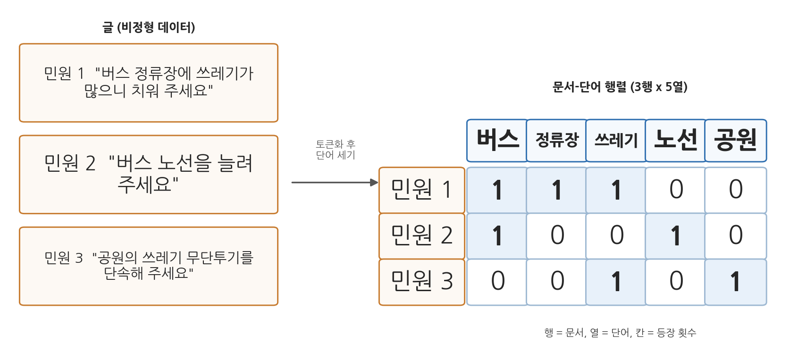
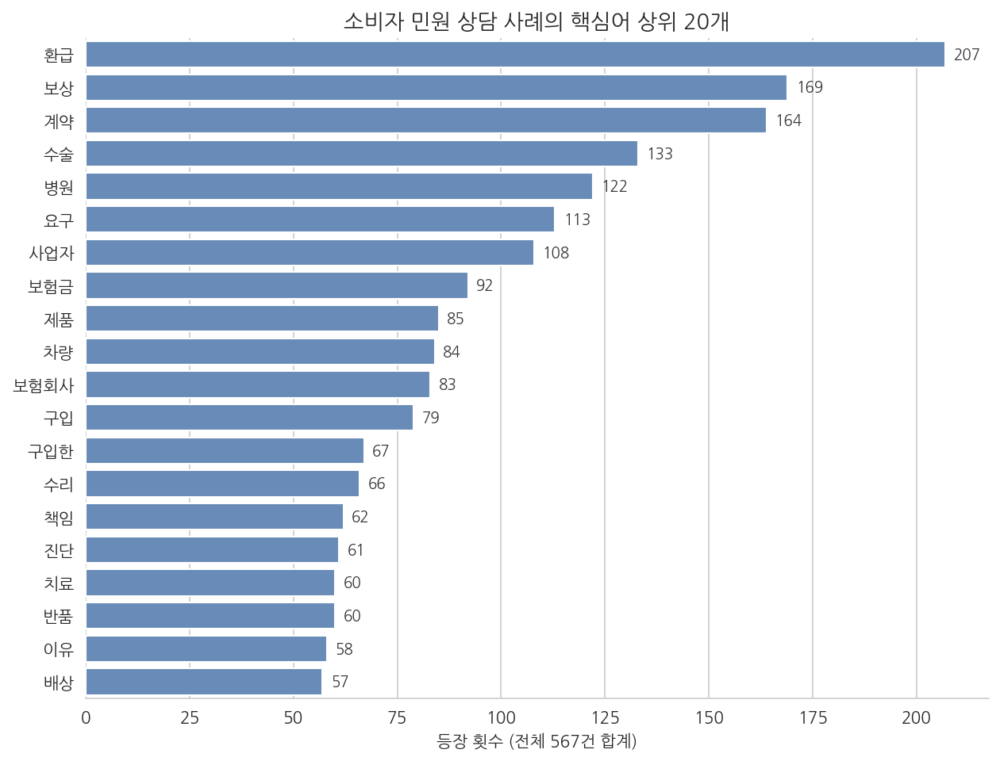
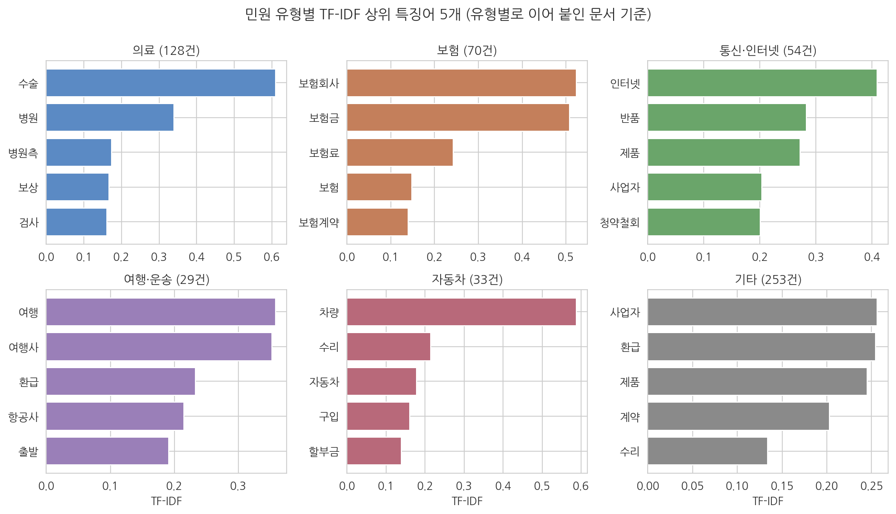

10주차 1회차. 텍스트 데이터 분석 (Text-as-Data)
단어를 알려면 그 단어가 어울려 다니는 단어들을 보라. (존 루퍼트 퍼스, 언어학자, 1957)
이 장에서 배우는 것
구청 민원 부서에서 일하는 장면을 상상해 보자. 하루에도 수십 건씩 민원이 들어온다. "버스 정류장에 쓰레기가 넘칩니다", "어린이집 입소 대기가 너무 깁니다", "공사장 소음 때문에 잠을 잘 수 없습니다". 과장이 묻는다. "요즘 우리 구 민원의 최대 이슈가 뭐죠? 작년과 비교하면요?" 이 질문에 답하려면 민원 수천 건을 읽어야 한다. 그런데 민원은 지금까지 우리가 다뤄 온 데이터와 생김새가 다르다. 행과 열이 있는 표가 아니라, 사람이 쓴 글이다.
지난 주까지 우리는 숫자로 된 데이터를 다뤘다. 인구, 예산, 출산율은 처음부터 표 안의 숫자였다. 이번 주의 질문은 이것이다. 글도 데이터가 될 수 있는가. 답은 "그렇다"이고, 그 방법의 핵심은 놀랄 만큼 단순하다. 단어를 세는 것이다. 이 장에서는 글을 세어서 분석하는 고전적 방법을 배우고, 마지막 절에서 LLM 시대의 새로운 선택지, 곧 에이전트에게 글을 직접 읽혀 분석하는 방법과 비교한다.
이 장은 실제 데이터를 예시로 사용한다. 공정거래위원회가 공공데이터포털에 개방한 소비자 민원 상담 사례 567건이다. 소비자가 겪은 분쟁(보험금 거절, 어긋난 진료, 환불 거부 등)을 상담 사례로 정리한 텍스트로, 2회차 실습에서 이 데이터를 직접 분석한다.
구체적으로 다음을 배운다.
- 비정형 데이터가 무엇이고, 공공부문 어디에 쌓여 있는지
- 글을 숫자로 바꾸는 방법 (토큰화, 문서-단어 행렬)
- 많이 나온 단어와 중요한 단어는 다르다는 것 (빈도와 TF-IDF)
- 문서를 주제별로 묶고 나누는 두 방향 (토픽과 분류), 그리고 감성 분석
- 에이전트가 직접 읽는 분석과 통계적 분석의 장단점, 그리고 각각의 검증법
이 장은 하나의 질문을 따라 전개된다. "수천 건의 글을 읽지 않고, 그 안에서 패턴을 찾을 수 있는가?"
1.1 공공부문의 글(비정형 데이터)이 어디에 있는지 본다 → 1.2 글을 숫자 표로 바꾸는 법을 배운다 (토큰화, 문서-단어 행렬) → 1.3 "많이 나온 단어"의 함정을 TF-IDF로 넘는다 → 1.4 문서를 주제로 묶고(토픽) 범주로 나누는(분류) 원리를 개념 수준에서 익힌다 → 1.5 에이전트가 직접 읽는 방법과 비교하고, 둘 다 검증이 필요함을 확인한다.
1.1 비정형 데이터의 세계: 민원, 보도자료, 회의록, 법령
표에 담기지 않는 데이터
지금까지 다룬 데이터는 모두 표였다. 행은 시군구, 열은 인구나 출산율, 칸에는 숫자 하나. 이렇게 처음부터 행과 열의 구조를 갖춘 데이터를 정형 데이터(structured data)라 한다. 컴퓨터가 다루기 가장 편한 형태다. "합계출산율이 가장 낮은 시군구"를 찾으려면 열 하나를 정렬하면 끝난다.
그런데 공공기관이 실제로 만들어 내는 기록의 상당수는 표가 아니다. 민원 한 건을 생각해 보자. "지난달부터 아파트 앞 도로에 대형 화물차가 밤새 주차되어 있어 아이들 등굣길이 위험합니다. 단속을 요청합니다." 이 글에는 장소, 시점, 문제, 요구사항이 다 들어 있지만, 어느 것도 별도의 열에 담겨 있지 않다. 사람은 한 번 읽으면 이해하지만, 컴퓨터에게는 그저 긴 문자열일 뿐이다. 이런 데이터를 비정형 데이터(unstructured data)라 한다.
공공부문은 비정형 데이터의 바다다. 대표적인 것만 꼽아도 다음과 같다.
표 10-1. 공공부문의 주요 비정형(텍스트) 데이터
| 종류 | 내용 | 분석하면 알 수 있는 것 (예) |
|---|---|---|
| 민원 | 국민이 기관에 제기한 불편·요구·질의 | 시민 불편의 유형별 규모, 새로 급증하는 이슈 |
| 보도자료 | 기관이 발표하는 정책 홍보문 | 기관이 무엇을 앞세우는지, 시기별 정책 초점의 이동 |
| 회의록 | 국회·지방의회·위원회의 발언 기록 | 쟁점별 찬반 논리, 의원별 관심 주제 |
| 법령·조례 | 법률, 시행령, 자치법규의 조문 | 규제의 밀도, 유사 조례의 확산 경로 |
| 공고·계약서 | 입찰 공고, 계약 내용 | 조달 시장의 구조, 특정 업체 쏠림 |
이 가운데 행정 실무에서 가장 자주 만나는 것이 민원이다. 국민권익위원회는 국민신문고 등으로 접수되는 민원을 모아 "민원 빅데이터" 분석을 제공하는데, 민원에서 급증하는 키워드를 찾아 정책 문제를 조기에 감지하려는 시도다. 민원 텍스트가 시민의 불편을 실시간으로 알려 주는 감지기 역할을 하는 셈이다.
정형 데이터(structured data)는 행과 열의 표 구조를 갖춘 데이터다. 인구 통계, 예산서의 숫자가 여기에 든다.
비정형 데이터(unstructured data)는 미리 정해진 구조 없이 사람의 언어나 이미지로 기록된 데이터다. 민원, 보도자료, 회의록, 법령 조문 같은 글이 대표적이다. 분석하려면 먼저 구조(숫자)로 바꾸는 작업이 필요하다.
이 장의 예시 데이터: 실제 민원 상담 사례 567건
말로만 설명하지 않기 위해, 이 장과 다음 실습은 실제 데이터를 하나 정해 두고 계속 사용한다. 공정거래위원회가 공공데이터포털(data.go.kr)에 개방한 "소비자 민원학습데이터 모범상담 사례"다. 소비자가 기관에 제기한 분쟁 상담을 사례별로 정리한 것으로, 각 사례는 제목, 민원 내용, 답변 내용의 세 가지 글로 이루어져 있다. 원본 파일에는 568건이 들어 있는데 형식이 어긋난 1건을 빼면 567건이 분석 대상이 된다(왜 빼는지는 실습에서 직접 본다). 한 건의 민원 내용은 중앙값 기준 168자, 길어야 373자다.
이런 사례를 상상해 보면 된다. "인터넷 쇼핑몰에서 코트를 샀는데 사이즈가 맞지 않아 반품을 요구했더니 판매자가 거절합니다. 보상받을 수 없나요?" 부동산, 보험, 병원, 통신사, 여행사까지, 시민이 일상에서 겪는 분쟁이 망라되어 있다. 우리의 질문은 민원 부서 과장의 질문과 같다. 567건을 다 읽지 않고, 이 민원들이 주로 무엇에 관한 것인지 알 수 있는가.
1.2 텍스트를 숫자로: 토큰화와 문서-단어 행렬
세 건짜리 장난감 예시
방법의 뼈대는 작은 예에서 가장 잘 보인다. 다음 세 건의 민원이 있다고 하자(설명을 위해 만든 가상의 예다).
- 민원 1: "버스 정류장에 쓰레기가 많으니 치워 주세요"
- 민원 2: "버스 노선을 늘려 주세요"
- 민원 3: "공원의 쓰레기 무단투기를 단속해 주세요"
첫걸음은 글을 단어 단위로 쪼개는 것이다. 이 작업을 토큰화(tokenization)라 하고, 쪼개진 조각 하나하나를 토큰(token)이라 한다. 2주차에서 LLM이 글을 토큰 단위로 읽고 만든다고 배웠는데, 바로 그 토큰과 같은 발상이다. 민원 1을 쪼개면 "버스", "정류장", "쓰레기" 같은 내용어가 나오고, "많으니", "주세요" 같은 꾸미고 잇는 말도 나온다. 분석에서는 보통 주제를 담는 내용어만 남긴다.
다음 걸음은 세는 것이다. 문서마다 각 단어가 몇 번 나왔는지 세어 표로 만든다. 행은 문서, 열은 단어, 칸은 등장 횟수다.
표 10-2. 장난감 예시의 문서-단어 행렬 (3개 문서 x 5개 단어)
| 버스 | 정류장 | 쓰레기 | 노선 | 공원 | |
|---|---|---|---|---|---|
| 민원 1 | 1 | 1 | 1 | 0 | 0 |
| 민원 2 | 1 | 0 | 0 | 1 | 0 |
| 민원 3 | 0 | 0 | 1 | 0 | 1 |

그림 10-1이 이 과정을 한눈에 보여 준다. 왼쪽의 글 세 편이 토큰화와 세기를 거쳐 오른쪽의 3행 5열 숫자 표가 된다. 이 표를 문서-단어 행렬(document-term matrix)이라 한다. 표가 되는 순간 일어나는 일이 이 장에서 가장 중요한 대목이다. 글이라는 비정형 데이터가 정형 데이터로 바뀌었고, 따라서 지금까지 배운 모든 도구를 쓸 수 있게 되었다. 열을 더하면 단어별 총 빈도가 나오고(요약), 행끼리 견주면 문서끼리 얼마나 닮았는지 잴 수 있고(비교), 비슷한 행끼리 묶을 수도 있다(군집). 표 10-2만 봐도 민원 1과 민원 2는 "버스"를 공유하고, 민원 1과 민원 3은 "쓰레기"를 공유하며, 민원 2와 민원 3은 겹치는 단어가 없다는 것이 숫자에서 바로 읽힌다.
물론 대가도 있다. 단어를 세는 순간 단어의 순서가 사라진다. "치워 주세요"와 "치우지 마세요"의 차이 같은 문맥 정보는 이 표에 담기지 않는다. 이 한계는 1.5절에서 다시 만난다.
한국어라는 난관: 조사와 어미
영어라면 띄어쓰기로 자르는 것만으로 토큰화가 얼추 된다. 한국어는 사정이 다르다. "쓰레기가", "쓰레기를", "쓰레기는"은 같은 단어지만 조사가 붙어 모두 다르게 생겼다. 그대로 세면 컴퓨터는 이들을 서로 다른 세 단어로 취급하고, 빈도가 셋으로 쪼개져 분석이 흐려진다.
제대로 하려면 형태소 분석기라는 전문 도구를 쓴다. 문장을 언어학적 최소 단위로 쪼개고 품사를 알려 주는 프로그램으로, 명사만 골라내는 식의 깔끔한 처리가 가능하다. 다만 이 교재의 실습 환경에는 형태소 분석기가 설치되어 있지 않으므로, 우리는 더 단순한 규칙으로 승부한다. 공백으로 자른 뒤 단어 끝의 흔한 조사("가", "를", "에서" 등)를 떼어 내는 것이다. "쓰레기가"에서 "가"를 떼면 "쓰레기"가 되어 하나로 합쳐진다. 완벽하지는 않다. 예컨대 "구입"과 "구입한"은 이 규칙으로 합쳐지지 않아 따로 세어진다. 그러나 방법의 원리를 배우고 큰 패턴을 잡는 데는 충분하며, 무엇이 뭉개지는지 알고 쓰는 것이 중요하다.
여기에 한 가지 처리가 더 붙는다. 어느 문서에나 나오지만 주제와 무관한 말들, 예컨대 "저는", "그런데", "경우" 같은 단어는 세어 봐야 잡음만 된다. 이런 단어의 목록을 만들어 제외하는데, 이 목록을 불용어(stopword)라 한다. 어떤 단어를 불용어로 볼지는 정답이 없는 연구자의 판단이며, 7주차에서 배운 교훈이 그대로 적용된다. 전처리는 기계적인 잡일이 아니라 분석 결과를 좌우하는 판단의 연속이다.
토큰화(tokenization)는 글을 단어 같은 의미 단위(토큰)로 쪼개는 일이다. 한국어에서는 조사·어미 처리가 관건이며, 전문적으로는 형태소 분석기를 쓴다.
불용어(stopword)는 어느 문서에나 흔해 분석에 도움이 안 되는 단어로, 목록을 만들어 제거한다.
문서-단어 행렬(document-term matrix)은 행이 문서, 열이 단어, 칸이 등장 횟수인 표다. 글을 이 표로 바꾸면 숫자 데이터에 쓰던 분석 도구를 글에도 적용할 수 있다.
실제 데이터에서는 이 표가 얼마나 커질까. 민원 상담 사례 567건을 위의 단순 규칙으로 토큰화해 행렬을 만들면 567행 6,233열이 된다. 서로 다른 단어가 6,233개 나왔다는 뜻이다. 행 하나, 곧 민원 한 건이 6,233개의 숫자로 표현되는 셈이다. 사람은 이 표를 눈으로 읽을 수 없지만, 컴퓨터에게는 이제부터가 익숙한 세상이다.
1.3 무엇이 중요한 단어인가: 빈도와 TF-IDF
일단 세어 보기: 최빈 단어
문서-단어 행렬에서 가장 먼저 할 일은 열의 합계, 곧 전체에서 가장 많이 나온 단어를 뽑는 것이다. 민원 상담 사례 567건의 결과가 그림 10-2다.

그림 읽는 법부터. 세로축은 단어, 가로축과 막대 길이는 그 단어가 567건 전체에서 등장한 횟수다. 위에 있을수록 많이 나온 단어다. 1위는 "환급"(207회)이고 "보상"(169회), "계약"(164회), "수술"(133회), "병원"(122회)이 뒤를 잇는다.
여기서 무엇을 알 수 있나. 다 읽지 않았는데도 이 민원 뭉치의 성격이 드러난다. 소비자 민원의 중심에 돈을 돌려받는 문제(환급, 보상, 배상)와 계약 분쟁이 있고, 의료 분쟁(수술, 병원, 진단, 치료)이 그에 못지않은 큰 덩어리라는 것이다. 민원 부서라면 이 그림 한 장이 "우리에게 들어오는 민원의 지형도"가 된다. 목록 중간의 "구입"과 "구입한"이 따로 세어진 것은 앞 절에서 예고한 단순 전처리의 흔적이다. 형태소 분석기를 썼다면 하나로 합쳐졌을 것이다.
흔한 단어의 함정
그런데 단순 빈도에는 함정이 있다. 이번에는 질문을 바꿔 보자. "의료 관련 민원만의 특징은 무엇인가?" 의료 민원들에서 최빈 단어를 뽑으면 "환급", "보상", "요구" 같은 단어가 또 상위권에 나타난다. 이 단어들은 의료 민원의 특징이 아니라 민원이라는 장르 전체의 상투어다. 어느 유형의 민원에서 세어도 나오는 말은, 많이 나와도 그 유형에 대해 아무것도 말해 주지 않는다.
우리가 알고 싶은 것은 "어디에나 나오는 말"이 아니라 "여기에만 유난히 나오는 말"이다. 이 둘을 가르는 고전적 도구가 TF-IDF다. 이름은 어렵지만 발상은 곱셈 하나다. 두 가지 점수를 곱한다.
- 단어 빈도(term frequency, TF): 이 단어가 이 문서에 얼마나 자주 나오는가. 자주 나올수록 크다.
- 역문서빈도(inverse document frequency, IDF): 이 단어가 다른 문서들에서 얼마나 드문가. 드물수록 크다.
숫자 예시로 감을 잡자. 민원 100편이 있고, 어떤 민원 한 편에 "요구"와 "정류장"이 각각 3번씩 나왔다고 하자(가상의 예다). 두 단어의 TF는 같다. 그러나 "요구"는 100편 중 90편에 나오는 흔한 말이라 IDF가 바닥이고, "정류장"은 5편에만 나오는 드문 말이라 IDF가 높다. 곱한 결과, 이 민원의 특징어로는 "정류장"이 압도적으로 높은 점수를 받는다. 같은 3번이라도 "어디에나 있는 3번"과 "여기에만 있는 3번"은 무게가 다르다는 것, 이것이 TF-IDF의 전부다.
TF-IDF는 한 단어가 특정 문서를 얼마나 잘 대표하는지 나타내는 점수다. 그 문서에 자주 나올수록(TF) 오르고, 다른 문서에도 두루 나오면(IDF가 작아져) 깎인다. "많이 나온 단어"가 아니라 "그 문서다운 단어", 곧 특징어를 찾는 도구다.
실제 데이터에서: 유형별 특징어
민원 상담 사례를 여섯 유형(의료, 보험, 통신·인터넷, 여행·운송, 자동차, 기타)으로 나눈 뒤, 유형별로 민원을 이어 붙여 여섯 편의 "유형 문서"를 만들고 TF-IDF를 계산했다(유형을 어떻게 나눴는지는 실습에서 직접 다룬다). 결과가 그림 10-3이다.

여섯 개의 작은 그림이 각각 한 유형이고, 막대 길이가 TF-IDF 점수다. 결과는 각 유형의 개성을 선명하게 잡아낸다. 의료 유형은 "수술", "병원", "병원측", "검사"가, 보험 유형은 "보험회사", "보험금", "보험료"가, 여행·운송 유형은 "여행사", "항공사", "출발"이 특징어로 뽑혔다. 통신·인터넷 유형에서는 "청약철회"라는 법률 용어가 상위에 올라, 전자상거래 반품 분쟁이 이 유형의 핵심임이 드러난다. 그림 10-2에서 전체 1위였던 "환급"은 여러 유형에 걸쳐 나오는 말이라 특징어 순위에서는 뒤로 밀리거나 사라졌다. 단순 빈도와 TF-IDF가 서로 다른 질문에 답한다는 것을 두 그림이 나란히 보여 준다.
강조할 점이 있다. 우리는 민원 567건을 한 줄도 읽지 않고 이 지형도를 그렸다. 절차는 순전히 기계적이다. 자르고, 세고, 곱했을 뿐이다. 그래서 같은 데이터에 같은 절차를 적용하면 누가 하든 같은 결과가 나온다. 이 재현 가능성이 통계적 텍스트 분석의 큰 미덕이며, 1.5절에서 LLM 방식과 비교할 때 다시 등장한다.
1.4 주제 찾기와 분류: 토픽과 감성
묶는 것과 나누는 것
빈도와 특징어가 "무슨 단어가 중요한가"를 답했다면, 다음 질문은 문서 수준으로 올라간다. "이 민원 뭉치는 어떤 주제들로 이루어져 있는가", 그리고 "이 민원 한 건은 어느 주제에 속하는가". 접근은 두 방향이 있다.
첫째, 범주를 미리 정하지 않고 데이터가 스스로 묶이게 하는 방향이다. 원리는 문서-단어 행렬에서 바로 나온다. 비슷한 단어들을 쓰는 문서들은 행렬의 행이 서로 닮았을 것이므로, 닮은 행끼리 묶으면 주제의 덩어리가 드러난다. 이렇게 찾아낸 "함께 나오는 단어들의 묶음"을 토픽(topic)이라 하고, 이를 자동으로 찾는 기법들을 토픽 모델링(topic modeling)이라 부른다. 민원 만 건을 넣으면 "주차 단속", "층간 소음", "보육 시설" 같은 덩어리들이 사람이 범주를 정해 주지 않아도 떠오르는 식이다. 다만 기계가 찾은 토픽에는 이름표가 없다. 각 토픽의 대표 단어를 보고 "이건 주차 문제군"이라고 이름을 붙이고 뜻을 부여하는 일은 사람의 몫이다.
둘째, 범주를 미리 정해 두고 각 문서를 그중 하나에 배정하는 방향이다. 이것이 분류(classification)다. 민원 부서가 "교통, 환경, 복지, 기타"라는 분류 체계를 이미 갖고 있다면, 새 민원이 올 때마다 어디에 속하는지 정하는 문제가 된다. 분류의 가장 단순한 방법은 키워드 규칙이다. "버스나 주차가 들어 있으면 교통"이라는 식이다. 더 나아가면 이미 분류된 민원 수천 건을 컴퓨터에 학습시켜 새 민원을 자동 분류하게 만들 수도 있다. 어느 쪽이든 분류 체계 자체, 곧 세상을 몇 개의 범주로 어떻게 자를 것인가는 기계가 아니라 사람이 정한다.
토픽 모델링(topic modeling)은 범주를 미리 정하지 않고, 함께 등장하는 단어들의 묶음(토픽)을 데이터에서 자동으로 찾아내는 기법이다. 찾아낸 토픽에 이름과 의미를 붙이는 것은 사람의 일이다.
분류(classification)는 미리 정한 범주 체계에 각 문서를 배정하는 일이다. 키워드 규칙으로 할 수도 있고, 분류된 예시를 학습한 모델로 할 수도 있다.
감성 분석: 글의 온도 재기
주제와 별도로, 글의 태도를 재려는 시도도 있다. 이 글은 긍정적인가 부정적인가, 화가 났는가 차분한가. 이를 감성 분석(sentiment analysis)이라 한다. 고전적 방법은 단어 사전을 쓴다. "감사", "만족"이 나오면 긍정 점수를, "분노", "최악"이 나오면 부정 점수를 매겨 합산하는 식이다. 기업이 상품 리뷰를 분석할 때 널리 쓰인다.
공공부문에서는 쓰임이 조금 다르다. 민원은 애초에 불만을 담는 글이라 "민원의 90%가 부정적"이라는 분석은 하나 마나 한 소리다. 유용한 질문은 따로 있다. 부정의 강도가 시기에 따라 어떻게 변하는가, 어떤 정책 발표 뒤에 분노 표현이 급증했는가, 같은 주제의 민원인데 지역에 따라 어조가 다른가 같은 것들이다. 감성 분석 역시 단어 세기의 확장이므로 문맥의 함정을 그대로 물려받는다는 점도 기억해 두자. "친절하게 거절당했습니다"는 사전 방식으로는 긍정으로 세어지기 쉽다.
토픽이든 분류든, 결과를 읽을 때는 범주가 어떻게 만들어졌는지부터 물어야 한다. "기타"가 절반을 차지하는 분류는 분류 체계가 현실과 맞지 않는다는 신호이고, 토픽의 개수를 몇 개로 정했느냐에 따라 "발견되는 주제"도 달라진다. 범주는 자연에 있는 것이 아니라 설계되는 것이며, 그 설계에는 반드시 판단이 들어간다. 분석 결과 보고서에서 "AI가 자동으로 분류했습니다"라는 문장을 만나면, 어떤 범주로, 누가 정한 기준으로 분류했는지 되물어야 한다.
1.5 LLM 시대의 텍스트 분석: 에이전트가 직접 읽기 vs 통계적 방법
이제 기계가 글을 "읽는다"
여기까지 배운 방법들에는 공통점이 있다. 기계는 글을 이해하지 않는다. 세고, 곱하고, 묶을 뿐이다. 그래서 "치워 주세요"와 "치우지 마세요"를 구별하지 못하는 한계가 원리적으로 따라다녔다.
그런데 여러분 옆에는 이미 다른 종류의 도구가 있다. 이 과목 내내 함께한 에이전트, 곧 LLM이다. LLM은 문맥을 반영해 글을 처리한다. 민원 한 건을 주고 "이 민원의 유형과 요구사항을 정리해 줘"라고 지시하면, 단어를 세는 것이 아니라 사람이 읽듯 내용을 파악해 답한다. "친절하게 거절당했습니다"가 불만의 표현임도 안다. 그렇다면 토큰화니 TF-IDF니 하는 고전적 방법은 이제 필요 없는 것 아닌가.
그렇지 않다. 두 방법은 서로 다른 강점과 약점을 갖고 있어서, 지금의 실무는 둘을 함께 쓰는 쪽으로 가고 있다. 차이를 정면으로 비교해 보자.
표 10-3. 통계적 텍스트 분석과 LLM 직접 읽기의 비교
| 통계적 방법 (세기, TF-IDF 등) | LLM 직접 읽기 (에이전트 분류·요약) | |
|---|---|---|
| 원리 | 단어를 세어 패턴을 찾는다 | 문맥을 반영해 글을 처리한다 |
| 문맥 이해 | 못 한다 (순서·부정 무시) | 잘한다 (반어·복합 요구도 파악) |
| 재현성 | 같은 입력이면 항상 같은 결과 | 같은 입력에도 결과가 조금씩 다를 수 있다 (2주차 비결정성) |
| 투명성 | 절차를 전부 설명할 수 있다 | 왜 그렇게 판단했는지 완전한 설명이 어렵다 |
| 오류의 성격 | 뭉개고 놓친다 (문맥 손실) | 그럴듯하게 지어낼 수 있다 (2주차 환각) |
| 규모와 비용 | 수십만 건도 몇 초, 비용 거의 없음 | 건마다 처리 시간과 비용이 든다 |
| 검증 방법 | 절차 점검 + 표본을 사람이 읽어 대조 | 표본을 사람이 읽어 대조 + 같은 작업 반복시켜 일관성 확인 |
읽는 법은 이렇다. 문맥이 중요한 작업, 예컨대 민원 하나하나의 요구사항을 정확히 파악하거나 미묘한 유형을 가르는 일은 LLM이 강하다. 반대로 수만 건 전체의 지형을 재현 가능하게 그리는 일, 예컨대 "작년 대비 급증 키워드"를 매달 같은 기준으로 뽑는 일은 통계적 방법이 강하다. 통계적 방법의 오류는 체계적이라 예측할 수 있지만(문맥을 늘 놓친다), LLM의 오류는 예측하기 어렵고 때로 자신만만한 거짓의 형태를 띤다. 2주차에서 배운 환각이 텍스트 분석에서도 그대로 문제가 되는 것이다.
검증: 두 방법 모두에게 묻는다
그래서 이 과목의 원칙이 여기서도 반복된다. 어느 방법을 쓰든 검증 없이는 믿지 않는다. 텍스트 분석의 검증에는 다행히 왕도가 있다. 표본을 뽑아 사람이 직접 읽고 기계의 결과와 대조하는 것이다. 통계적 분류든 에이전트의 분류든, 민원 30건을 무작위로 뽑아 내 눈으로 읽고 "기계가 붙인 딱지가 맞는가"를 세어 보면 두 방법의 신뢰도를 같은 잣대로 잴 수 있다. 여기에 더해 두 방법을 서로에 대한 검증 도구로 쓸 수도 있다. 통계적 분류와 에이전트 분류가 어긋나는 문서들만 골라 읽으면, 무작위로 읽는 것보다 훨씬 효율적으로 문제 지점을 찾아낸다. 다음 실습에서 정확히 이것을 해 본다.
첫째, 통계적 방법은 LLM 결과를 검증하는 기준선이 된다. 에이전트가 "민원의 주류는 환불 분쟁"이라고 요약했을 때, 빈도표에 "환급 207회"가 찍혀 있으면 근거가 되고, 빈도표와 어긋나면 추궁의 단서가 된다. 둘째, 대규모·반복 작업에서는 여전히 통계적 방법이 표준이다. 매달 수십만 건 민원의 동향 보고를 LLM에게 한 건씩 읽히는 것은 느리고 비싸며, 달마다 기준이 흔들린다. 셋째, 원리를 알아야 지시를 잘한다. 문서-단어 행렬을 이해하는 사람은 에이전트에게 "불용어 목록을 보여 줘", "TF-IDF 기준으로 다시 뽑아 줘"라고 정확히 지시하고 그 결과를 따질 수 있다. 도구가 늘어난 것이지, 앎이 필요 없어진 것이 아니다.
한 가지 예고를 하자. LLM에게 글을 읽히는 방식은 다음 주(11주차)에 한 단계 발전한다. 에이전트가 기억에 의존해 답하는 대신, 법령이나 지침 문서를 옆에 놓고 근거를 인용하며 답하게 만드는 문서 그라운딩이다. 텍스트를 분석 대상으로 삼는 이번 주와, 텍스트를 답변의 근거로 삼는 다음 주는 동전의 양면이다.
요약
공공부문 기록의 상당수는 민원, 보도자료, 회의록, 법령 같은 비정형 텍스트이며, 분석하려면 먼저 숫자로 바꿔야 한다. 기본 전략은 글을 토큰으로 쪼개고(토큰화) 문서별 단어 빈도를 세어 문서-단어 행렬을 만드는 것이다. 이 표가 만들어지면 요약·비교·군집 등 기존 도구를 글에 적용할 수 있게 되지만, 단어의 순서와 문맥은 사라진다. 한국어는 조사·어미 때문에 토큰화가 까다로우며, 형태소 분석기가 없을 때는 조사 떼기와 불용어 제거 같은 단순 규칙으로 근사한다. 많이 나온 단어(빈도)와 그 문서다운 단어(TF-IDF 특징어)는 다른 질문에 답하며, 실제 민원 상담 사례 567건에서 전체 최빈어는 "환급"이지만 유형별 특징어는 "수술", "보험금", "청약철회"처럼 갈라졌다. 문서 수준에서는 범주 없이 주제를 찾는 토픽 모델링과 정해진 범주에 배정하는 분류, 글의 태도를 재는 감성 분석이 있으며, 범주 설계는 언제나 사람의 판단이다. LLM은 문맥을 이해하며 글을 직접 읽지만 비결정성과 환각이라는 약점이 있고, 통계적 방법은 재현 가능하고 투명하지만 문맥을 놓친다. 어느 쪽이든 검증의 왕도는 표본을 사람이 직접 읽어 대조하는 것이며, 두 방법의 불일치 지점은 가장 효율적인 검증 창구가 된다.
연습문제
10-1. 문서-단어 행렬 만들기. 다음 세 민원으로 문서-단어 행렬을 손으로 만들어 보라(가상의 예). 단어는 "주차", "단속", "소음", "공사", "요청" 다섯 개만 세라. - 민원 A: "불법 주차 단속을 요청합니다" - 민원 B: "공사 소음이 심해 단속을 요청합니다" - 민원 C: "야간 공사를 멈춰 주세요" 완성한 뒤 답하라. 세 민원 중 가장 닮은 두 건은 어느 쌍이고, 행렬의 어떤 숫자가 그 근거인가.
10-2. 빈도인가 특징어인가. 어느 시청이 한 해 민원 전체에서 최빈 단어를 뽑았더니 1위가 "요청"이었다. (a) 이 결과가 시정에 별 도움이 안 되는 이유를 이 장의 개념으로 설명하라. (b) "작년에는 안 보이다가 올해 급증한 단어"를 찾는 것은 빈도 분석과 TF-IDF 중 어느 쪽의 발상에 가까운가, 왜 그런가.
10-3. 방법 고르기. 다음 세 가지 업무에 대해, 통계적 방법과 에이전트 직접 읽기 중 무엇을 주된 도구로 쓸지 정하고 이유를 한두 문장으로 써 보라. 검증 절차도 하나씩 붙여라. (a) 민원 40만 건에서 월별 급증 키워드를 뽑아 매달 같은 형식의 동향 보고서를 만드는 일 (b) 항의성 민원 50건을 읽고 각각에 대한 회신문 초안을 잡는 일 (c) 민원 3,000건을 "교통, 환경, 복지, 기타"로 분류해 부서별로 배분하는 일